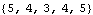
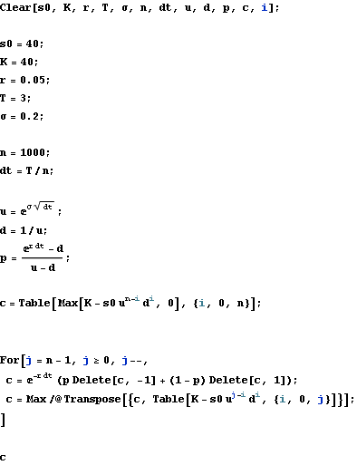
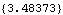
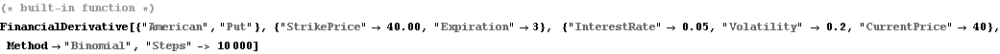
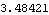
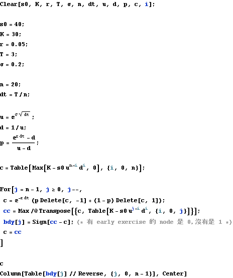
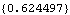

American Put
American Put





Early Exercise Boundry
“1” means the node is early exercised.


| {0} |
| {0,0} |
| {0,0,0} |
| {0,0,0,0} |
| {0,0,0,0,0} |
| {0,0,0,0,0,0} |
| {0,0,0,0,0,0,0} |
| {1,0,0,0,0,0,0,0} |
| {1,0,0,0,0,0,0,0,0} |
| {1,1,0,0,0,0,0,0,0,0} |
| {1,1,0,0,0,0,0,0,0,0,0} |
| {1,1,1,0,0,0,0,0,0,0,0,0} |
| {1,1,1,0,0,0,0,0,0,0,0,0,0} |
| {1,1,1,1,0,0,0,0,0,0,0,0,0,0} |
| {1,1,1,1,1,0,0,0,0,0,0,0,0,0,0} |
| {1,1,1,1,1,0,0,0,0,0,0,0,0,0,0,0} |
| {1,1,1,1,1,1,0,0,0,0,0,0,0,0,0,0,0} |
| {1,1,1,1,1,1,0,0,0,0,0,0,0,0,0,0,0,0} |
| {1,1,1,1,1,1,1,0,0,0,0,0,0,0,0,0,0,0,0} |
| {1,1,1,1,1,1,1,1,0,0,0,0,0,0,0,0,0,0,0,0} |